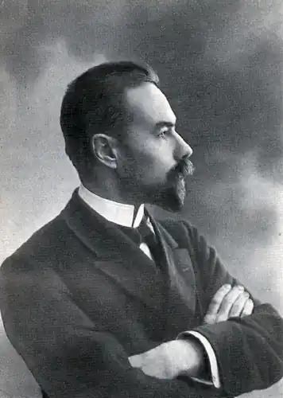
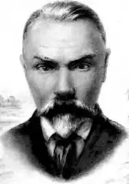
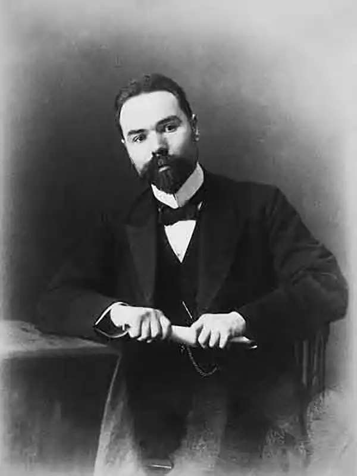

(1 (13) грудня 1873, Москва — 9 жовтеня 1924, там же)
Вже в ранній юності в особистості Брюсова парадоксально проявилися два антиномичных початку самовіддача стихій життя (еротика, гра пристрастей, світ нічних ресторанів, рулетка) і вольова організуюча активність, схильність до "конструювання" себе і управління оточуючими людьми і ситуаціями.
В 1894-95 Брюсов випустив три збірки "Російські символісти", сос Народився в купецькій сім'ї. Дід з боку батька купець з колишніх кріпаків, дід з боку матері поет-самоучка А. Я. Бакулін. Батько захоплювався літературою і природничими науками. Закінчивши московську гімназію Л. В. Поліванова, Брюсов в 1893-99 навчався на історико-філологічному факультеті Московського університету, спочатку на відділенні класичної філології, потім на історичному (закінчив з дипломом 1 ступеня). У 1896 одружився на Івана Матвіївні Рунт, яка стала його вірною помічницею, після смерті хранителем архіву і видавцем спадщини. Вже в ранній юності в особистості Брюсова парадоксально проявилися два антиномичных початку самовіддача стихій життя (еротика, гра пристрастей, світ нічних ресторанів, рулетка) і вольова організуюча активність, схильність до "конструювання" себе і управління оточуючими людьми і ситуаціями. В 1894-95 Брюсов випустив три збірки "Російські символісти", що складаються з її власних перекладів з французьких символістів і деяких творів поетів-початківців. В цьому виданні, а також у перших поетичних збірках "Chefs doeuvre" ("Шедеври", 1895), "Me eum esse" ("Це я", 1897) та збірнику переказів з П. Верлена "Романси без слів" (1894) Брюсов заявив про себе не тільки як про поета символістської орієнтації, але і як про організатора-пропагандисте цього руху. Вміло зрежисована атмосфера скандалу, пов'язаного з кількома епатуючими віршами, відразу зробила нову школу помітним фактом літературного життя. Книги віршів 1900-09 "Tertia vigilia" ("Третя сторожа", 1900), "Urbi et orbi" ("Місту і світу", 1903), "Stephanos" ("Вінок", 1906), "Всі наспіви" (1909) визначили антиномичную орієнтацію його поетики на традиції французького "Парнасу" з його твердими жанровими і стиховыми формами, словесної пластикою, схильністю до історико-міфологічних сюжетів і екзотики і одночасно на французьких символістів, з їх поетикою нюансів, настроїв, музичної невизначеністю. Після 1910 намічається поворот до більшої простоти форми (збірка "Дзеркало тіней", 1912), проте в пізнішому творчості знову перемагають тенденції до ускладнення мови і стилю. Вірші цього періоду демонструють і образно-тематичні комплекси, характерні для всієї його творчості: урбанізм, "наукова" поезія, історизм, переконаність у множинності істин і самоцельности мистецтва. Постійний інтерес Брюсова до історії обумовлював оцінку злободенних фактів у перспективі світових подій. Почавши з політичних оглядів в журналі "Новий шлях", які проповідували слов'янофільські теорії (Росія як "третій Рим"), він пережив крах великодержавних ілюзій під впливом подій російсько-японської війни. Революцію 1905 сприйняв як історично неминучий крах всієї культури минулого, приймаючи і можливість власної загибелі як частини старого світу (вірш "Прийдешні гуни", 1905). У 1907-12 увагу Брюсова до поточної політики слабшає, але зростає його прагнення осмислити глибинні закономірності історичного процесу. У романах "Вогненний ангел" (1907-08) і "Вівтар перемоги" (1911-12) він звертається до переломним історичним епохам, намагаючись зрозуміти кризовий стан світу шляхом історичних аналогій. У роки Першої світової войныпоначалу поділяв настрою військового патріотизму (збірка "Сім кольорів веселки", 1916; а також не з'явився за його життя збірник "Дев'ята Камена"), проте, побувавши на фронті в якості військового кореспондента, приходить до розуміння антилюдського характеру війни. Брюсов прийняв Жовтневу революцію як корінний переворот в історії людства, активно співпрацював з радянською владою в області культурного просвітництва. У 1920 вступив в Комуністичну партію. В 1917-19 очолював комітет з реєстрації друку, завідував Відділом наукових бібліотек і літературним відділом Наркомосу, займав відповідальні пости в Державному вченій раді, Держвидаву і ін.; читав лекції в 1-му МГУ, організував у 1921 Вищий Літературно-художній інститут і був його першим ректором, викладав у Комуністичній академії, в Інституті слова. В останніх віршованих збірках "Дали" (1922), "Mea" ("Поспішай",1924) намагався розробити принципи нової "наукової" поетики, однак пізніші поетичні експерименти не зустріли живого читацького відгуку.